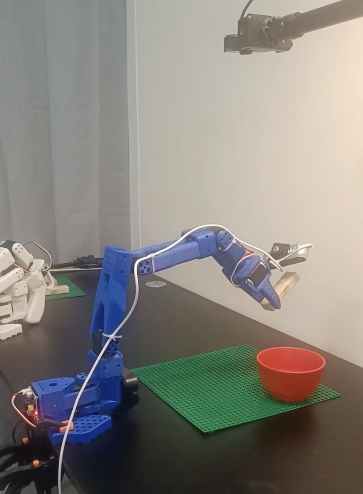

GROOT N1.5

GROOT N1.5 is a foundation model for humanoid robot control, enabling natural and responsive movements for complex manipulation tasks.
Project Overview
This project demonstrates the implementation and deployment of GROOT N1.5, a state-of-the-art foundation model designed for humanoid robotics. GROOT N1.5 leverages advanced machine learning techniques to enable robots to perform complex manipulation tasks with human-like dexterity and adaptability.
Key Features:
- Foundation model for humanoid robot control
- Natural and responsive movement generation
- Complex manipulation task execution
- Real-time control and adaptation
- Integration with robotic platforms
Demonstration Video 1: GROOT N1.5 performing manipulation tasks
Demonstration Video 2: Advanced control with GROOT N1.5
Technical Details
GROOT N1.5 represents a significant advancement in humanoid robotics, combining state-of-the-art machine learning with real-time control systems to enable sophisticated robotic behaviors.
Capabilities:
- Natural Motion: Human-like movement patterns and gestures
- Task Adaptation: Ability to adapt to new tasks with minimal training
- Real-time Processing: Low-latency control for responsive interactions
- Multimodal Learning: Integration of vision, proprioception, and force feedback